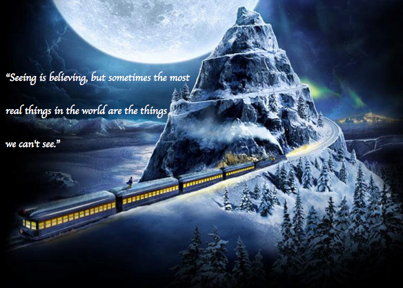

The Magic of The Polar Express
Welcome to the enchanting world of The Polar Express! Based on the beloved children’s book by Chris Van Allsburg, this heartwarming story takes readers and viewers on a magical journey to the North Pole. The narrative captures the imagination of children and adults alike, emphasizing the importance of belief and the spirit of Christmas. Whether you’re familiar with the original book, the animated film, or the holiday train rides inspired by the story, The Polar Express holds a special place in the hearts of many. Join us as we explore the story, characters, and the immersive experiences that make this tale a cherished holiday tradition. Dive into the wonder and excitement that The Polar Express brings to life!
The Story
At the center of The Polar Express is a young boy who embarks on a magical train ride on Christmas Eve, setting off to meet Santa Claus. As he boards the mysterious train, he finds himself surrounded by other children, each filled with anticipation and wonder. The journey is filled with whimsical adventures, from breathtaking views of snowy landscapes to heartwarming interactions with fellow passengers. Throughout the ride, the boy learns profound lessons about courage, friendship, and the importance of believing in the extraordinary. The story beautifully illustrates how faith in the magic of Christmas can lead to remarkable experiences. As the train chugs toward the North Pole, the boy's journey becomes a metaphor for the transition from childhood wonder to the challenges of growing up. Ultimately, it’s a celebration of the joy that belief can bring to our lives.
The Characters
- The Hero Boy: The unnamed protagonist who embarks on the journey to the North Pole, representing the innocence and curiosity of childhood.
- The Conductor: The authoritative and charismatic leader of the Polar Express, guiding the children on their magical adventure.
- Santa Claus: The iconic figure of Christmas who embodies joy, wonder, and the spirit of giving. He plays a pivotal role in the story.
- The Hobo: A mysterious figure who appears during the journey, representing the idea of questioning belief and exploring one's fears.
- The Girl: A fellow passenger who becomes friends with the Hero Boy and shares in the adventure, showcasing the importance of companionship.
- The Reindeer: While not central characters, the reindeer are part of the magical elements of the North Pole, adding to the festive atmosphere.
The Book
The Polar Express was published in 1985 and quickly became a classic in children's literature. Written and illustrated by Chris Van Allsburg, the book is renowned for its stunning illustrations that evoke the beauty and magic of winter. The intricate artwork captures the essence of a snowy night, creating an immersive experience for readers. The story has not only captivated young audiences but also won numerous accolades, including the prestigious Caldecott Medal, which recognizes outstanding children's picture books. Van Allsburg's masterful storytelling, combined with his detailed illustrations, creates a narrative that resonates with the imagination of children and adults alike. It encourages readers to hold onto their belief in magic and the joy of the holiday season. The book has since become a beloved holiday tradition, cherished by families around the world.